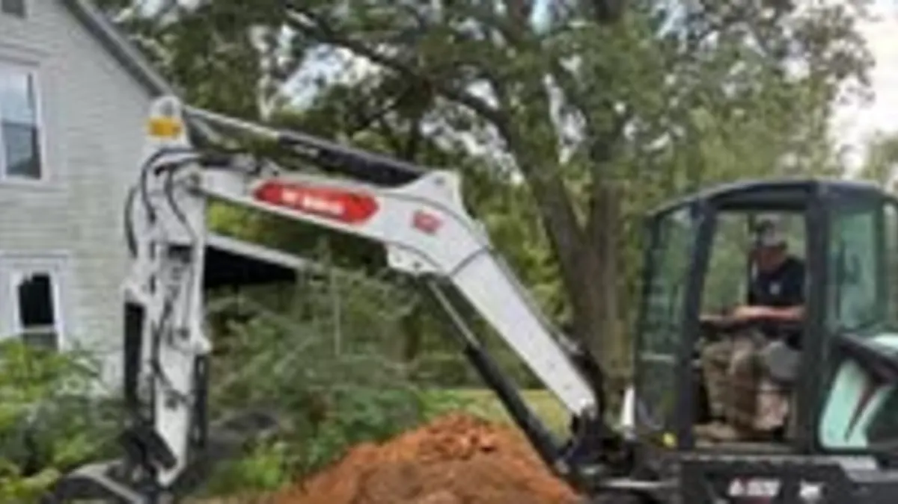

Septic Service Overview
New system installation, how the whole process works, and what a septic system is doing underground.
Sewer backups, blocked lateral lines, yard drains and drain tile — cleaned out, cleared and repaired. We answer the phone at night, because this is the work that does not wait.
A sewer backup gets worse every hour it sits. Call Mike directly at 785-488-7925 — day, night, weekend or holiday.
Call 785-488-7925 Now
Out here the line between a plumbing problem and an excavation problem is the property boundary. Once the trouble is past the house and out in the yard — the lateral line, the sewer line to the main, the yard drains, the drain tile — it takes equipment to reach and someone who knows what is under the ground before digging starts. That is the work Mike's Services LLC does, and we have the truck for the clean-out side of it too.
Request a QuoteA sewer or lateral line fails for a short list of reasons, and most of them are visible once the line is reached. Tree and hedge roots find the joints and grow into them. Clay and cast iron lines crack or shear where the ground has shifted. A line laid without enough fall holds water and silts up. And on older rural properties, a line has sometimes simply been crushed by equipment driving over it years ago.
We clear and clean lines, and when a line is damaged past clearing, we excavate, replace the failed section and backfill properly. Because we do our own excavation and trenching, there is no waiting on a second contractor to show up with a machine — which is most of why this kind of job stretches out.
If the problem is a septic system rather than a sewer line, we will tell you that instead of selling you the wrong job. A tank that is full to the lid and a line that is blocked look identical from inside the house and are completely different repairs.
Yard drains, area drains and drain tile all do the same job: move water away from a building before it finds the foundation. They all fail the same way too — silt, leaves, roots and collapsed pipe. A drain that has not moved water in years is usually still there and still clearable; it just has not been opened up since it was installed.
This matters more on Kansas properties than people expect, because our rain comes in bursts. A system sized for an inch an hour behaves very differently in the storms that actually roll across Saline County. If you have standing water in the same spot after every heavy rain, or a basement or crawl space that takes water only during big storms, the drainage is worth looking at before anything inside gets repaired again.
We clean existing drains and tile, and where the grading itself is the problem we can fix that too — finish grading and drainage correction are the same equipment and the same visit.
Sewer and drain work from Mike's Services LLC covers:
Mike's Services LLC provides sewer line cleaning, lateral line clearing and yard drain services throughout Central Kansas including Salina, Tescott, Bennington, Minneapolis, Lincoln, Ellsworth, and Abilene. We serve property owners across Saline County, Ottawa County, Lincoln County, Dickinson County, Ellsworth County, and Cloud County. Not sure if we cover your location? Call us — we may be able to help even in areas not listed here.
Common questions from Central Kansas property owners.
Most often roots growing into the joints, a cracked or collapsed section of line, or a line without enough fall that has silted up over the years. Grease and non-flushable items contribute, but on rural Kansas properties roots and shifted ground are the usual culprits.
From inside the house they look the same, which is why guessing is expensive. A tank that is overdue for pumping and a blocked line both cause slow drains and backups. We check the tank level first, because that is the cheaper answer and it is true more often than people expect.
Not always. Many lines clean out without excavation. We dig when the line is cracked, crushed, collapsed or root-damaged past clearing, and in that case we open up only the failed section rather than the whole run.
Yes. Yard drains, area drains and field or foundation drain tile are all part of this work. If a drain has not visibly moved water in years, it is usually still intact and still clearable.
Yes. Sewer backups are the main reason the 24/7 number exists. Call 785-488-7925 and you will reach Mike, not an answering service.
Most people call about one of these and turn out to need another. Here is the whole list.
New system installation, how the whole process works, and what a septic system is doing underground.
Routine tank pump-outs and clean-outs. If you cannot remember the last one, it is due.
Failing drain fields, cracked or collapsed tanks, broken distribution boxes and crushed lines.
Buying or selling a rural property, or confirming a system is sound before you spend money on it.
Soil percolation testing and site evaluation -- the step that decides what system the ground will take.
📄 From the Blog: When Spring Storms Roll Through Kansas, Cleanup Begins — read the full guide.
📄 From the Blog: Excavation & Utility Trenching in Central Kansas — read the full guide.
Back to Septic Service in Salina & Saline County, or see everything Mike's Services LLC does.
Call us or submit a quote request and we will get back to you quickly with honest answers and a clear price.